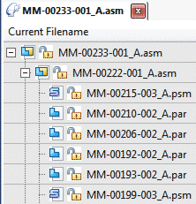
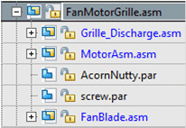

Document tree
The document tree helps you work with the components that make up your assembly. It provides alternate ways to view the composition and arrangement of the assembly. You can use the document tree to view, modify, and delete assembly components.

Documents can include parts, subassemblies, assembly copy features, and so on. You can use the document tree to:
-
View components in collapsed or expanded form. For example, when you expand a subassembly, you can view all of its parts. You can use the Home tab→Select group→Expand All command to expand all levels in a document tree.
If after you expanded an assembly you received a message about duplicate components and you selected the option Don’t Show this dialog again, the system displays in blue text all the assemblies that have duplicates.

-
Highlight, select, and clear components for subsequent actions.
-
Revise parts within an assembly.
As you click on components displayed in the document tree, Design Manager displays, just below the ribbon, the file size of each selected component.
The symbols in the document tree indicate the source of the components in the assembly. The document tree can include the following:
|
Symbol |
Description |
|
Assembly or subasssembly |
|
|
Sheet metal document |
|
|
Part document |
|
|
Part copy |
|
|
Link originating from Assembly Copy feature |
|
|
Assembly Copy feature |